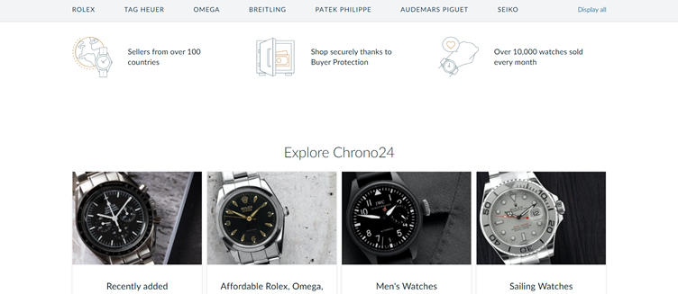
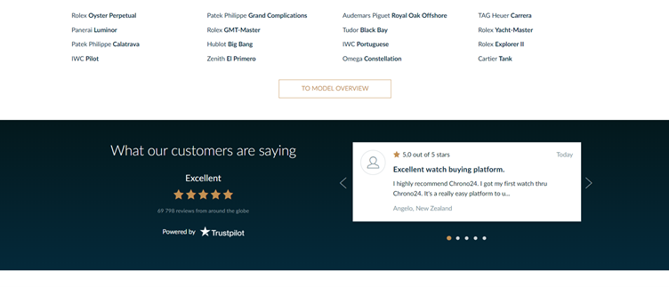

Author: Oratile Tlhabanyane
Chrono24 is a website which holds the world’s best watches (“Chrono24 - Info/Service - FAQ / Help” n.d.).
I will be critically analysing the website homepage’s Design, UI and UX together with Kidd’s reading on Representation.
To start off, the Chrono24 homepage has quite a detailed layout if being compared to traditional or conventional homepage. Normally on a conventional homepage, one would see just a brief introduction of the website on the homepage, however, with this website it includes a lot of content, images, action buttons and ‘sub-navbars and sub-footers’ (see figure 1.3 and 1.4).
Figure 1.1: Screenshot of Chrono24
Figure 1.1: Screenshot of Chrono24
Let’s first analyse the UX of the homepage according to the resources from last semester. One of these resources express that UX is essentially how good the usability of the website is. There are a few laws that effect UX but one that I want to focus on is Serial Position Effect (Yablonski n.d.). This effect states that users are more prone to remember first and last items on a layout. Thus, a website places, or would place, important information at the beginning and the end of a website page and in the middle would be information that is not as important. The homepage of this website has sub-navbars and sub-footers (see figure 1.3 and 1.4) which might make it a difficult to understand the layout of the homepage, but you can see the important information which was placed at the beginning and the end of the homepage.
The Information Architecture (IA) of the Chrono24 website is non-conventional but functional. IA is how a website is constructed and how the content is organized (“Information Architecture Basics” 2013). If you would look at figure 1.1, we see action buttons on the wireframes by the navigation bar which easily show a user where to go and what to do, for example when you press on the dropdown menu for ‘SELL A WATCH’, it shows a user how to sell a watch. However, if you continue to look at figure 1.2, this is just a continuation of the homepage when scrolling, you can see what looks like another navigation bar, but they are just action buttons to either go to various labels of watches such ‘ROLEX’, ‘OMEGA’, etc.
Figure 1.1: Screenshot of Chrono24
Figure 1.1: Screenshot of Chrono24
The layout of these action buttons should have probably been reconsidered to have maybe been in a 4x4 miniature table of bars instead of them being next to each other like how an initial navigation would look. This is just to show a differentiation in importance between the two navbars but based on the Serial Position Effect we know that the navigation bar at the beginning is more important. There are a lot of UX elements we could analyse and discuss about this homepage but lets move onto the design and UI of the website
Figure 1.1: Screenshot of Chrono24
The two basic principles of design are readability and legibility. Readability is “the way in which words and blocks of type are arranged on a page” and legibility shows “how a typeface is designed and how well one individual character can be distinguished from another” (“Typographic Readability and Legibility” n.d.). Though there is a lot of content that has been placed onto the homepage, the content is readable and legible. However, I think the headings could be in bold just to show clearly when new information is starting, or even a border would help with clear separation of information. Chrono24 uses a lot of watch images to show the watches they have on the market or on stock, and there is also data representation. If you look at figure 1.2, you can see the three images with their data shown below. During Kidd’s reading on ‘Representation’, he states that data visualization is a core staple for the web and these data visualisations have become animated and interactive (Kidd, 2015). In Chrono24, they do not have animated and interactive data visualization but whenever you re-enter the homepage, there is new data presented on the same position of the old data, see figure 1.5.
762 words